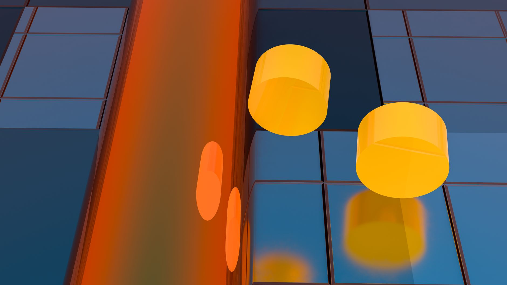

한국판 국부펀드 2027년 출범, 소재 투자 어디 꽂히나

정부는 AI·반도체·첨단소재를 핵심 투자처로 삼는 '한국판 국부펀드' 출범을 추진 중이다. 출범 목표 시점은 2027년이며, 장기 투자 구조로 설계된다. 동시에 산업부는 소부장 투자지원금을 기존 1200억 원에서 1700억 원으로 확대하고 지원 분야를 4개에서 6개 첨단전략산업으로 넓혔다. 중소·중견 기업이 집행하는 투자액의 최대 50%를 정부가 직접 지원하는 구조다.
지원 대상 6개 분야는 반도체·디스플레이·이차전지·첨단모빌리티·바이오·로봇이다. 2019년 일본 수출규제 이후 누적 소부장 공공투자는 약 4조 원을 넘어섰으나, 갈륨·게르마늄·탄탈럼 등 핵심 전략소재의 국산화율은 여전히 10% 미만 수준이다. 고려아연의 갈륨 양산(2028년, 연 15.5t)과 게르마늄 회수 공정(미국 파트너십 결합)이 현재까지 가장 구체적인 국산화 경로로 꼽힌다.
국부펀드 투자 방향에서 AI 데이터센터 연계 소재가 새 변수로 부상했다. 탄탈럼 커패시터, 냉각재, HBM 패키징 소재 수요가 AI 서버 확산과 함께 급증하는 반면 국내 공급 기반은 취약하다. 정부의 '반도체·AI·데이터센터 삼각축' 전략이 현실화되려면 전력 인프라(제12차 전기본)와 소재 조달 체계가 동시에 뒷받침돼야 한다는 지적이 복수 포럼에서 나왔다.
호남 반도체 클러스터는 차량용 반도체 소재로 특화 방향이 공식화됐다. 미국 완성차 업체들이 중국산 부품 전면 교체에 착수한 상황에서, 차량용 SiC 기판·전력반도체 소재의 대미 공급 루트가 열릴 가능성이 생겼다. 다만 SiC 기판 양산 기술을 보유한 국내 기업은 현재 SK실트론 1곳뿐으로, 공급 다변화까지는 최소 3~5년이 필요하다.
국부펀드와 소부장 지원 확대가 맞물렸다는 점이 핵심이다. 기존 소부장 정책은 R&D 보조금 중심이었는데, 이번에는 투자 원금의 50%를 직접 지원하는 방식으로 전환됐다. 민간 투자 유인이 구조적으로 달라지는 것으로, 2019년 이후 가장 강도 높은 자금 투입 신호다.
그러나 국산화 속도와 정책 집행 속도 사이에 gap이 존재한다. 갈륨 양산은 2028년, 게르마늄 회수 공정 안정화는 2027년이 현실적 시점이다. 중국의 수출통제가 2023년 시작됐으니, 대체 공급망 구축까지 최소 4~5년이 소요되는 셈이다. 국부펀드 자금이 집행되더라도 즉각적인 공급 안정화 효과보다는 3~5년 후 포지셔닝 효과가 더 크다.
소부장 지원의 실제 수혜 구조도 주목해야 한다. 삼성전자·SK하이닉스 같은 대기업은 지원 대상이 아니다. 중소·중견 소재 기업 중에서도 이미 양산 기반을 갖추고 있거나, 대기업과 공급계약이 체결된 곳이 우선 수혜를 받는 구조다. 정책 발표보다 실제 계약 체결 현황을 추적해야 한다.
고려아연은 갈륨(2028년 15.5t)·게르마늄(2027년 공정 안정화) 양산 계획을 모두 보유한 국내 유일 플레이어다. 국부펀드·소부장 지원이 집중될 가능성이 가장 높은 기업으로, 전략광물 생산 기반 확보 측면에서 독점적 위치를 유지한다.
SK실트론은 SiC 기판 국내 유일 양산 기업으로, 호남 클러스터의 차량용 반도체 특화 전략과 미국 완성차의 중국산 부품 퇴출이 맞물리면 대미 수출 수혜가 가시화될 수 있다. 미국 내 SiC 수요는 전기차·산업용 인버터를 합산해 2028년까지 연평균 30% 이상 성장이 전망된다.
탄탈럼 커패시터 소재, 냉각재 등 AI 서버 연계 틈새 소재 기업들이 새 수혜군이다. 국내 AI 데이터센터 투자가 2025~2027년 집중되면서 수입 의존도 90% 이상인 이들 소재의 국산화 필요성이 부각된다.
국산화 경로가 없는 소재 분야는 국부펀드 혜택에서 소외될 가능성이 높다. 비스무트(중국산 의존도 90% 이상)처럼 대체 공정 개발이 초기 단계인 소재는 자금이 투입되더라도 양산까지 7년 이상이 필요해 단기 수혜가 없다.
차량용 외 반도체 소재 중소기업은 호남 클러스터 특화 전략에서 배제될 수 있다. 디스플레이·광학 소재 분야는 지원 6개 분야에 포함되나, 실제 예산 배분에서 반도체·이차전지에 밀릴 구조다. 기업 입장에서는 지원 신청 전에 분야별 실제 배정 예산을 먼저 확인해야 한다.
국부펀드 투자 실행 시점은 2027년이지만, 소부장 1700억 원 지원 신청 창구는 현재 열려 있다. 투자액의 50% 매칭 지원이라는 구조는 중소·중견 소재 기업 입장에서 실질적인 자금 레버리지다. 단, 지원 요건이 '첨단전략산업 6개 분야 연계'로 제한되므로, 자사 제품이 해당 카테고리에 해당하는지를 먼저 확인하고 사업계획서를 준비해야 한다.
투자자라면 정책 발표 시점보다 실제 양산 계약 체결 시점을 주목해야 한다. 고려아연 갈륨·게르마늄 공정의 경우 2025~2026년 파일럿 생산 결과가 핵심 변수다. 파일럿 데이터가 확인되기 전에 선행 포지셔닝을 취하는 것이 유효한 전략이다.
AI 서버 연계 소재(탄탈럼 커패시터, 냉각재, HBM 패키징 소재)는 국부펀드 공식 지원 대상에 포함되지 않더라도, 데이터센터 수요 급증에 따라 자생적 수요가 생긴다. 이 분야는 정책 수혜보다 수요 구조 변화를 추적하는 것이 더 중요하다.
실제 조달 현장에서는 — 소부장 정책 발표 직후 대기업 구매팀이 협력사에 '지원 신청 가능 여부'를 먼저 확인하는 패턴이 반복된다. 이는 대기업이 협력사 지원금을 간접적으로 활용해 단가 인하를 요구하는 압력으로 이어지는 경우가 많다. 중소 소재 기업은 지원금 수령 후 납품단가 재협상 조항을 계약서에 명시하는 방어 조치를 반드시 챙겨야 한다.
이 포스팅은 쿠팡 파트너스 활동의 일환으로 수수료를 제공받습니다.